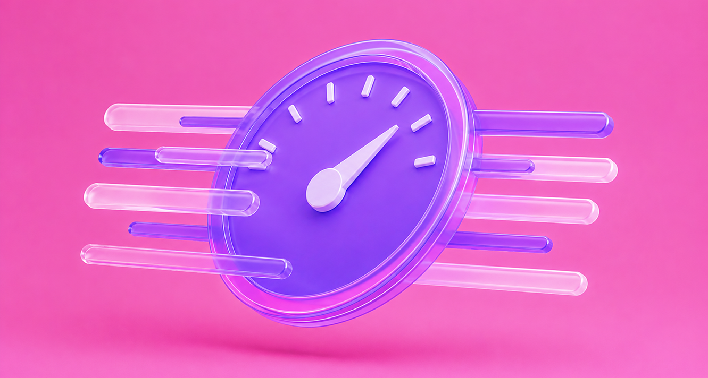
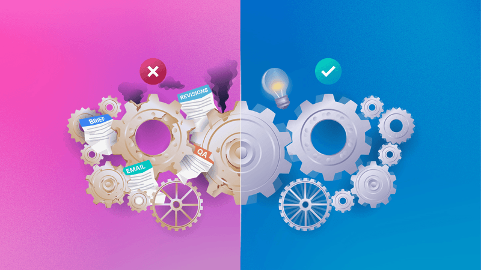
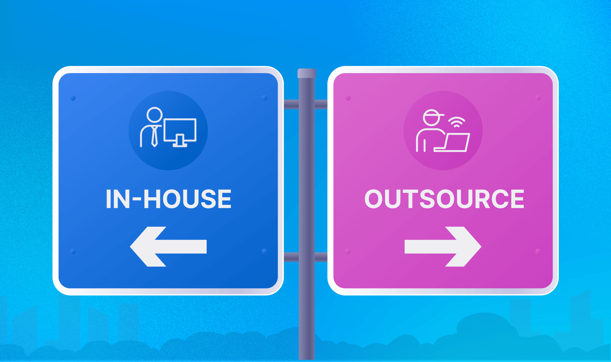
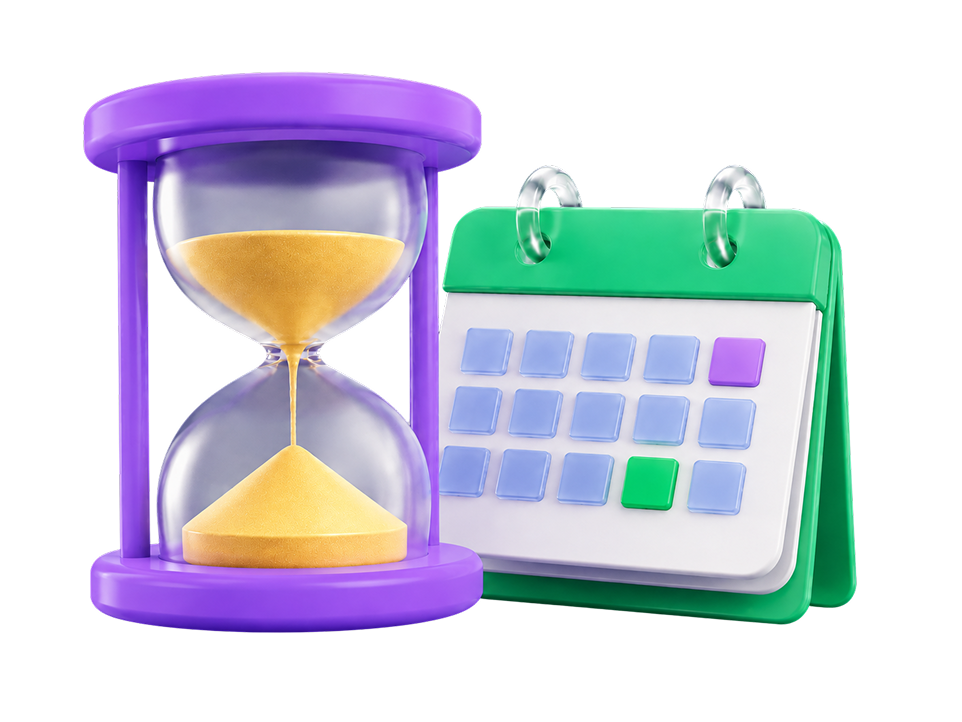

Practical guides for marketing teams running a design workload, written from years on the production floor and given away whole.
How the model actually works, what you should get for the money, and the questions to ask before you sign, from a team that has run it for years.
Read the guide
Most design estimates only count canvas time. The real number covers the full production cycle, brief to final file.
The hours blow out during the design, but they are never caused there. Here is what actually drains them.
The checklist behind the brief tool: what every brief should carry before work starts, so nothing comes back for a second round.

Sort your tasks into three levels, so you stop paying senior rates for simple work, or handing complex work to someone who cannot carry it.

A hire and a partner solve different problems. Here is the framework for telling which one you actually have.
No posts in this category yet.
We broke this down further in our free guide: the hidden hours nobody counts, the real planning figures, and the four-step method to work out your team's design gap.
